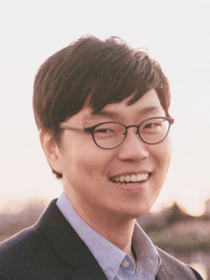

Festival of Learning 2026
Seoul, Korea
June 29 - July 3, 2026

The Festival of Learning 2026 brings together academic communities in AI, Education, Learning Sciences, and Human-Computer Interaction. By co-locating their individual conferences, our mission is to create a unique, shared space where researchers and practitioners can:
- • Share cutting-edge research and define best practices.
- • Spark new, cross-disciplinary collaborations.
- • Collectively address the most pressing challenges and opportunities in the future of learning.
We are excited to host this festival in Seoul, Korea, a perfect backdrop of high-tech innovation and educational leadership for this unique gathering.
Venue and Date
When
June 29 - July 3, 2026
Where
COEX
Seoul, Korea
Participating Conferences
Learning at Scale 2026
L@S 2026
June 29 - July 3, 2026
International Conference on Artificial Intelligence in Education 2026
AIED 2026
June 29 - July 3, 2026
Educational Data Mining 2026
EDM 2026
June 29 - July 3, 2026
International Society of the Learning Sciences Annual Meeting 2026
ISLS 2026
June 29 - July 3, 2026
General Chairs

Juho Kim
KAIST

Alice Oh
KAIST